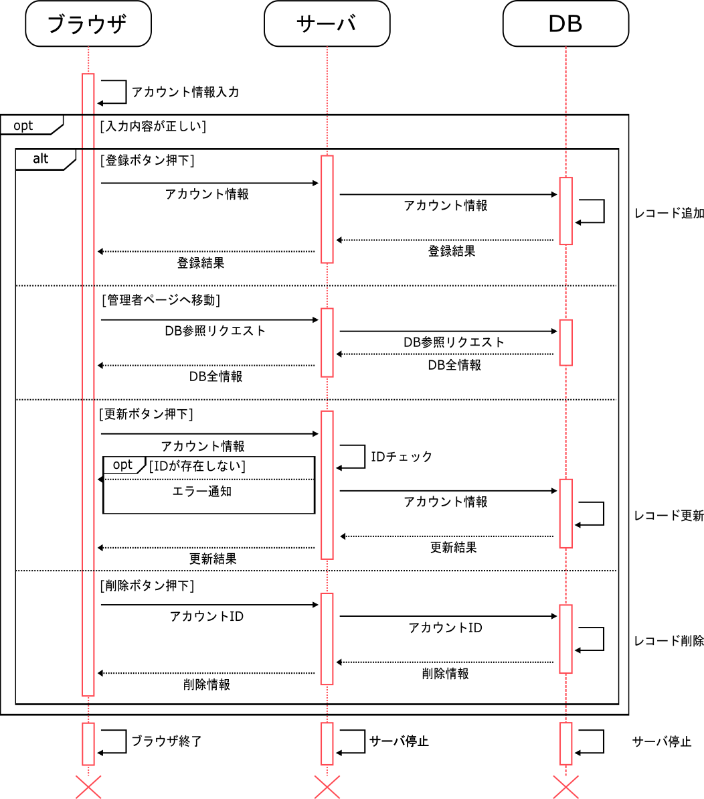
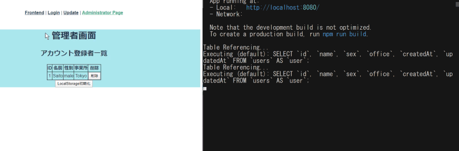
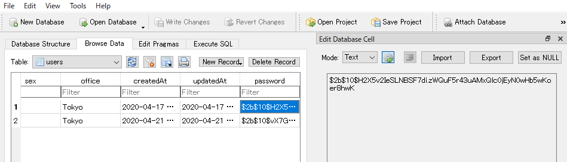
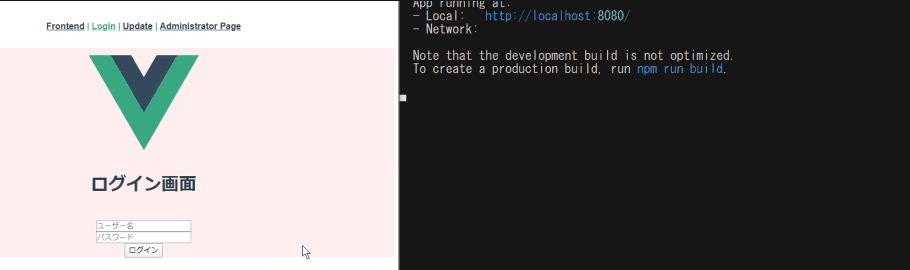

<!DOCTYPE html><html lang="ja"></html><head><meta charset="utf-8"><title>about_user_login</title><link rel="stylesheet" href="../sass/about_user_login.css"></head><body></body><h1 class="project_title">ログイン機能を自力で一から作成する(user_login) </h1><p> <a href="https://github.com/yuyu456-corder/user_login" target="_blank">user_loginリポジトリへのリンク</a><h2>プロジェクト概要</h2><p>ログイン機能そのものを外部のAPI等を使わず自力で開発する</p><h2>どうして作ろうと思ったか</h2><p>普段何気なく使っているログイン機能、外部サービスのAPI等で簡単に実装できるが実際はHTTP(S)通信・セキュリティ面・データベース連携等、様々な技術が使われている。</p>あえて自力でこれらを学びつつログイン機能を作成することで、
得られる知識が多いと思い作成を開始しました。<h2>開発環境</h2><table id="dev_tools" border="1" flame="border" rules="all"><tbody><tr><td>OS</td><td>Windows</td></tr><tr><td>エディタ（IDE）</td><td>Visual Studio Code</td></tr><tr><td>バージョン管理ソフト</td><td>git/GitLab/GitHub</td></tr><tr><td rowspan="2">開発言語</td><td>JavaScript</td></tr><tr><td>Node.js/Vue.js/Express.js</td></tr><tr> <td rowspan="2">その他ツール</td><td>SQLite(RDBMS)</td></tr><tr><td>Sequelize(ORM)</td></tr></tbody></table><h2>将来的な運用について</h2><p>ログイン機能でユーザごとに権限があるマイページに安全に移動させる事ができたら、他に開発しているWebサービスにマージして運用していきたいです。</p><p>また、UI、UXの面からユーザにとってよりよい操作性やデザインのログインページにブラッシュアップできたらと思っております。</p><h2>開発時に自分が苦労した点<h3>ORMの理解</h3><p>SQL文をJavaScript内のコードに書いてしまうと保守性や可読性が落ちると懸念したためORMを実装しました。</p>ORMはSequelizeを使用しましたが、上手くDBに接続できない、テーブルが認知されない等のエラーに悩まされましたが、
公式のリファレンスを読むことで少しずつ理解を深めていきました。<h3>データ通信を意識した事</h3><p>今まで、CやVHDL等のハードウェア寄りの言語を扱っていた為、サーバとクライアントが通信するという認識が曖昧でした。</p>そもそもネットワークの知識から不足していると考え、関連する書籍や応用情報の参考書等を用いて、<p>OSI基本参照モデルから根本的に理解することにしました。</p><P>今までHTTP(S)と曖昧に認識していたものがようやく実態になって理解できました。</P><h3>promiseによる非同期処理の理解</h3><p>サーバを作成する際、node.jsの非同期処理に最初悩まされました。</p>サーバのレスポンスを待たず、結果（undefined）を返してしまったり、自身が書いたコードの実行順が分からなくなってしまうという事態が発生しました。<br>ES2015から実装されたpromiseを用いた構文でサーバの処理を書くことでこれらの問題を解決したと共に、<br>非同期処理、同期処理の使い分けを意識できるようになりました。</h2></p><h1 class="system_constitution">システム構成について</h1><p>user_loginのシーケンス図を下記に示しています。</p><p>ユーザの操作を受け付けたり、画面描画を行うフロントエンド用サーバ</p>フロントエンドで受け取ったデータを元にデータベースと連携した操作を行うバックエンド用サーバ（APIサーバ）
この2つのサーバが主軸となり、システムを構築しています。<p>この2つのサーバ間ではHTTP通信を行っており、バックエンド用のサーバのルーティング処理を切り替える事でCRUD処理を実装しています。</p><h1 class="about_function">実装機能の説明<h2>データベース連携によるユーザ情報のCRUD処理</h2><p>SQLite＋Sequelizeにより、JavaScript（Node.js+Express.js）で</p>アカウントの新規登録、登録ユーザの表示、既存ユーザの情報変更、既存ユーザの削除を行う処理を実装しました。<br><figcaption>ユーザの新規登録の例</figcaption><p>上記のGIFアニメより、"Takahashi"というユーザ名を入力し、登録処理を行いました。</p>登録処理後に、管理者画面に戻ると"Takahashi"のアカウント情報が表示されています。<br>右側のターミナルで左側のブラウザの入力内容がサーバに送られ、DBに格納しています。<br>DBに登録が終了したことをレスポンストとしてブラウザに返すという一連の流れでCRUD処理を行っています。<h2>より安全なユーザ認証<h3>登録したユーザのパスワードの暗号化</h3><p>SQLiteはパスワード設定を行わないためDBの情報が常に外部に晒されています。</p>パスワードのような悪用されるであろうデータはハッシュ値を計算して暗号化しています。<br>DBと通信する際にサーバ側でパスワードを復号するため、ユーザ側は平文のパスワードのままでログイン処理を行えます。<figcaption>暗号化されたパスワード例（passwordのカラム参照）</figcaption><br><h3>アクセストークンによるユーザ認証</h3>登録したユーザに対しアクセストークンを発行することでより安全なユーザ認証機能を実現させました。<p>アクセストークンはJsonWebTokenを用いて、HS256(共通鍵暗号方式)で暗号化します。</p>このプロジェクトでは認可サーバとAPIサーバが同一でサーバ間の通信が行われないためRS256（公開鍵暗号方式）ではなく
導入コストの少ないHS256を暗号化のアルゴリズムに採用しています。<br><p>秘密鍵の情報は公開していないため、外部からこのトークンが復号化されるリスクを減らしています。</p><figcaption>発行されたアクセストークンの例</figcaption></h2><p>左側がログイン画面のブラウザで、右側がサーバ側の処理のログを出しているターミナルです。</p>ログインが成功すると、そのユーザに対して一意なアクセストークンを発行しています。
ターミナルのgenerated Token:～以降に表示されているのがアクセストークンとなります。</h1>